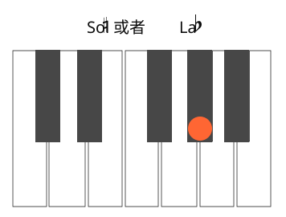
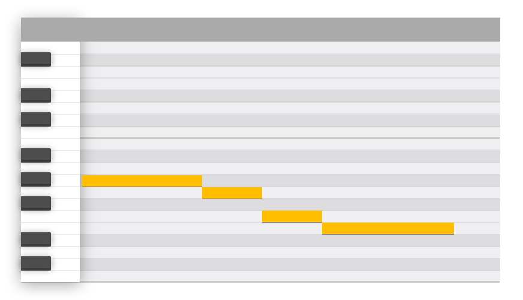

1. 重逢等音
1. 重逢等音
在准备篇中，我们介绍了**等音（异名同音，enharmonic）**这个概念。它是指像“G♯”和“A♭”这样，同一个音可以用多种不同名称来表示的关系。


究竟把等音记作哪一种，就像单词的拼写一样，在英语中通常被称为“拼写（spell / spelling）”。 随着和弦篇的逐步深入，我们终于来到了需要认真在意这个“拼写”的阶段。例如，当和弦进行品质改变（Quality Change）而出现临时记号时。

IVm和III通常分别使用A♭和G♯来记写，这绝不会颠倒过来。这是因为我们分别将其理解为“A音降低变成了A♭”以及“G音升高变成了G♯”。 但是，如果反过来拼写真的不行吗？不严格规范拼写难道就是错误的吗？在这里我们有必要稍微探讨一下这个问题。
拼写与现实世界
提到用升号还是降号记写，很多人总觉得这不过是五线谱纸面上的规矩罢了，或许会有人这么想：
那不是只有看着五线谱做音乐的人才要在意的事吗？像我这种在钢琴卷帘里作曲的人根本无所谓吧。在钢琴卷帘里不都是同一个键吗？
我也只看TAB谱，这篇文章我就跳过了。
确实，从界面设计上来说，钢琴卷帘和吉他TAB谱本身并没有区分等音。

但在开头我必须明确指出：音符的拼写绝不仅仅是停留在乐谱表面上的视觉问题。倒不如说，平时不用五线谱的人，反而更应该认真学习一次这部分内容。
2. 音名・唱名・音级
首先，我们来复习一下在准备篇中学过的与音相关的名称。用来管理音的常用名称有“音名”、“唱名”和“音级（度数 / Degree）”。

像“在G大调中，g音是Do，d音是Sol”这种首调唱名体系，大家现在应该已经逐渐习惯了吧？音符拼写是音名与唱名两者共通的问题。

理所当然地，如果乐谱上记为升号，那么一切都会变为升号，反之亦然——乐谱、音名、唱名全都是联动对应的。而且，虽然看似不起眼但极其重要的一点是：表示“音阶中第几个音”的音级（Degree）也会随之联动。 因此从根本上说，“音名与唱名其实承载着‘该音位于音阶第几级’这一数据”，建立这种思维是至关重要的[1]。
拼写与音阶的联动关系
归根结底，音符的拼写不仅代表着该单音本身的信息，更是向人传达“整个音阶处于何种形态”的宏观讯息。让我们来看实际的乐谱。

这里的例子是先搭好和弦进行，然后在上面加入吉他乐句而形成的。 IVm和弦的三音拼写为A♭。这除了意味着“A音降低变成了这个音”之外，（在原则上）还附加意味着“G音依然正常存在”。正因如此，才自然孕育出了“Sol – La♭ – Si♭”这样的乐句。 而III和弦正好相反。“G音升高变成了这个音，而A音依然正常存在”，因此形成了“Sol♯ – La – Si”这样的乐句。 也就是说，将等音识别为哪一种拼写，会直接影响你对当前音阶的认知，甚至进一步左右创作出来的乐句形态。

因此，早在把音乐落实在乐谱上之前的创作构思阶段，拼写问题其实就已经作为重要因素介入进来了。
凭借感性的拼写
不过，我想可能有人在平时用钢琴卷帘作曲时，并没有特别在意过拼写问题也能应付自如。这样的人，其实是几乎在无意识中做出了区分。不需要停下来逐一推导，也能凭借经验习得的感觉，知道应该在上面用什么样的音阶来叠加旋律乐句。这说明其具备良好的音乐直觉。 然而，仅仅依赖感性有时会带来错失音乐更多可能性的风险；为了扫除这种盲区，音乐理论才把这些细节进行了严谨的理论化。下面我们把情况稍微变复杂一点……
3. 决定拼写
上面的例子是“先有和弦”，因此一开始拼写就已经是确定的状态。但如果是“先有旋律”的作曲方式，我们就有可能置身于拼写尚未确定的前置阶段。下面我们就来看这样一个案例。

这里只有一次落在黑键上，处于g♯或a♭的位置，但因为音符旋即发生跳进，整个音阶结构完全不明朗，所以拼写尚未确定。此时它正处于根据伴奏安排，既可向左也可向右的中立状态。 没错，拼写能够唯一确定通常发生在“分析已有作品”的时候；而在创作过程中，身为作曲者的你自己完全有可能站在“决定拼写的关键瞬间”。
视为Sol♯的情况
如果把这个音视为Sol♯并据此构建伴奏演奏，可以构想出如下的完成版本：
IVΔ7 IIIm7 III7 VIm
为了充分发挥Sol♯的作用，这里选择了E7和弦。通过副属和弦III7来制造情绪的高潮，这是非常经典的模式。在听到上面没有伴奏的原版时，大多数人脑海中想象的大概就是这种声响吧。
视为La♭的情况
另一方面，如果把这个音视为La♭来构建演奏，则可以构想出如下的完成版本：
IVΔ7 IIIm7 IVm7 I
这次选择的是IVm7和弦。也就是同主音小调借用（Parallel Minor）！音乐情绪瞬间逆转，营造出了下属小和弦独有的哀愁氛围。 像这样，根据你将其视作哪一个音，最终孕育出的音乐面貌截然不同。所以说，拼写问题对于不看五线谱的人来说也绝非事不关己。 更具体来说，拼写不同，贝斯音的可选范围也会随之改变。

如上图所示，就算你心里想着“这里用我们熟悉的3rd （三音外壳）吧”，如果是Sol♯，对应的贝斯音就是Mi；如果是La♭，对应的贝斯音就是Fa。在如此细微之处，正隐藏着音乐命运的分岔路口。 在C大调这种音名g♯即唱名Sol♯的最直观环境下，“这个音既可以当Sol♯也可以当La♭”是相对容易凭直觉意识到的，依然属于无意识层面可以应付的范围。 但随着调性变得复杂，你可能连这种可能性都察觉不到，从而导致无法找到自己真正渴望的那个和弦。到了那个时候，“理性的拼写”相较于“感性的拼写”就会体现出无可替代的价值。
4. 白键与等音
如果把刚才的音频整体向上平移4个，变成E大调的曲子，事情就会变得更加扑朔迷离。

在E大调的这个场景中，“既可为Sol♯亦可为La♭、拼写未定之音”，在上面的钢琴卷帘中被标记为“C4”。没错，这个c音，实际上真正的拼写还未确定。 这是我们第一次探讨这一点：白键其实也是有等音的。通过键盘来验证会更容易理解。
在键盘上确认

这是E大调中的IIIm和IV和弦。标注的Do-Re-Mi是相对于当前调的“唱名”。因此IIIm是Mi-Sol-Si，IV是Fa-La-Do。如果感到困惑，请先仔细确认一下E大调的首调唱名对应关系。 接着，将这两个和弦分别进行品质改变（Quality Change）……

看！作为白键的c音，在E大调中竟然成为了Sol♯与La♭的交汇冲突点。 这确实非常容易让人绕晕。如果不习惯以调性相对的方式来理解“唱名”，很容易在此陷入混乱。
在乐谱上确认
我们再在乐谱上审视这一现象。如果想在E大调中表示III和弦，需要在b音上加升号写作“b♯”，以此表明音高上升了。

将它与C大调并列在一起对比，就会完全理解为什么这样写才是最自然的。 如果在此时心里想“b♯到底是什么鬼啊看着真麻烦，直接写c不就行了”，反而会让这个场景下实际发生的事情变得难以传达。

和弦原本由三度叠置形成的整齐外观被打破了，看起来像用了某种古怪的特殊和弦，甚至让人误以为是不是同主音小调借用的和弦，反而掩盖了此处真正的音乐意图。在音乐世界中，确实存在着“不写成c而写成b♯才最贴切”的情境。
潜伏在实操中的陷阱
此刻我们回过头再看刚才的钢琴卷帘。
看到这个赫然写着“C4 – A4 – F♯4”的钢琴卷帘，你是否会遗漏掉：这里除了配Am之外，配上G♯和弦同样能产生极佳的音乐意境？ 这类陷阱在编配和弦与创作乐句时随处可见。“自己是否在不知不觉中，错过了配上绝妙和弦的良机……？”这种隐忧确实让人不太踏实。而具备了理论化思维，就能把这些盲区彻底点亮。 当然，这在很大程度上也可以靠经验和直觉去弥补，但通过理智清晰理解，从而全方位提升决策速度与精准度，正是音乐理论的核心使命。
应用于转调
此外，通过拓展“原来还可以这样解读”的思维，我们还能将其巧妙应用于意想不到的转调中。
E♭ B♭ A♭ A♭m C♯m9 F♯ BΔ7
这里开头是E♭大调。在第四个和弦流露出下属小和弦的哀愁之后，转眼间调性转向了升号系方向，眨眼间便转调到了B大调。 从3个降号的调大跳到5个升号的调，听起来却十分自然顺畅。这背后有着严谨的原理：核心在于将A♭m重新解读为等音和弦G♯m。 如果是G♯m，在B大调看来就是VIm和弦，属于基础调内和弦的一员。因此A♭m其实是能够直通B大调的“跨界桥梁”。 在已经掌握了调与音阶概念的当下，如果单纯按照常规思维，在此处恐怕很难想到能直接接续到C♯m吧？看似矛盾的是，正因为你能清晰区分拼写，才能够自如驾驭这种**“特意以相反拼写来解读”的“违规级绝招”**。
Check Point
音名与唱名都与“属于调（音阶）的第几个音”这一音级（度数）信息紧密绑定。因此在对拼写犹豫不决时，想象该场景下的音阶结构即可。即使是白键上的音，只要不是调内固有的音，就应当注意它究竟是上方音降低形成的，还是下方音升高形成的。
即便是在落实为乐谱之前的创作构思阶段，区分等音也具有重要的实战意义。
基于上行/下行的判断
顺便提一句，关于拼写的判断标准，有时会听到“音往上走就用升号，往下走就用降号”的说法。

这种说法确实有一定道理，靠这种判别法也有相当概率能选对拼写，但并不推荐将其作为第一判断依据。 这与“听歌曲最后一个音就能知道调性”的道理类似：不符合这一定律的情况比比皆是，而且这种机械化的判别可能会让人脱离“用语言准确表达当前发生的音乐内涵”这一本质。它只适合在信息太少而举棋不定时，作为辅助参考。
5. 重升与重降
对于进阶概念“重升号与重降号（Double Sharp / Double Flat）”，我们也在此做个说明。由于在日常中并不那么频繁遇到，如果现在读来没有很深刻的体会也完全没有关系。等以后真正碰到了，再回过头来复习即可。
重升号

“重升号”是用于将原本已经带有升号的音再升高半音的记号。与原位自然音相比，相当于升高了一个。例如f最终与g互为等音。大家肯定都会想：“为什么要用这么曲折迂回的记法呢？” 所谓“把已经带升号的音再升高半音”，其典型场景是：“调号中原本已经带有升号的音，在和弦品质改变等情况下又需要再升高半音”。 因此，遇到重升号的大多是在B大调或F♯大调这种带有大量升号的调性中。

B大调中的IIIm和弦是D♯m。其组成音为d♯ – f♯ – a♯这3个音。全员都已经处于升号状态。 当我们要用乐谱表示将这个三音升高半音变成III和弦时，和弦品质改变并不会更改音符本身的字母名称。因此f♯便超越自我极限实现了“超进化”，变成了“f”。 看到不熟悉的记号难免会心生防备，但只要明白它意味着“比调内固有状态升高半音”，在本质上与普通的升号没有任何区别。
重降号
与重升号成对的概念就是“重降号”。

“重降号”是用于将原本已经带有降号的音再降低半音的记号，例如b♭♭与a互为等音。同样地，这也是在调号已经带降号的前提下进一步降低……因此绝大多数都在降号较多的调中出现。

像这样，在带有5个降号的D♭调中，IVm和弦中就会典型地登场。同样地，它表示“比调内固有状态降低半音”，在本质上与普通的降号没有任何不同。
6. 流程总结
再次总结拼写判别的关键要点如下：
- 善用唱名 为了理解该调内部正在发生的事情，使用首调唱名分析音乐更不易被表面现象迷惑。
- 推测音阶 从当前发出的声响，推测该场景下使用的是什么音阶。若音数较少，可通过逻辑推测补全空白。只要知道该音的音级（度数），拼写也就迎刃而解。
- 还原为C大调 若脑子转不过来，可以将整首曲子移调转为C大调（或A小调）来思考，其中发生的脉络就会一目了然。
虽然由于音乐本身的构造、不同流派的习惯、乐谱的使用目的等，可能会产生各种各样的例外，但基本方针总归可以提炼为：“从推测出的音阶结构为各音分配编号，并以该编号对应的拼写来记录”。 我们完全不需要持有“拼写错了很丢人”这种消极的压力和心态。相反，如果能以“注重拼写能把音乐看得更通透、让作曲变得更有趣”这种积极的心态作为驱动力去面对拼写，那将是最理想不过的了。
总结
- 思考等音即是思考音级度数，而这与对音阶结构的思考息息相关。
- 在作曲时，仅凭单条旋律有时无法确定等音拼写，将其视作哪种音来配和弦，会使音乐走向产生天翻地覆的变化。
- 通过与C大调对比和类推，就能很容易理解使用“重升号”与“重降号”的实际意义。

和弦论第III章到这里就全部结束了！恭喜！请一边思考接下来进入哪个篇章，或是安排一段创作与分析的时间，一边继续前进吧。